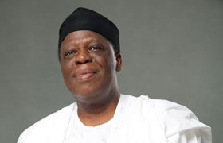
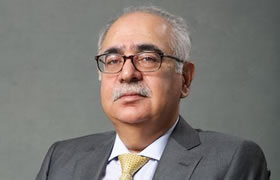
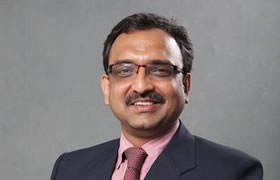

<!DOCTYPE html>
<html lang="en">
<head>
    <meta charset="UTF-8">
    <meta name="viewport" content="width=device-width, initial-scale=1.0">
    <title>Chellarams Plc | Leadership</title>
    <link href="images1/favicon.ico" rel="icon" type="image.ico" />
    <script src="jquery/jquery.min.js"></script>
    <script src="js/bootstrap.min.js"></script>
    <link rel="stylesheet" href="css/bootstrap.min.css" />
    <link href="https://cdnjs.cloudflare.com/ajax/libs/animate.css/3.7.0/animate.min.css" rel="stylesheet" />
    <link rel="stylesheet" href="style.css" type="text/css" />
    <link rel="logo" href="logo_chellarams_90th_anniversary.png" type="image/png" />
    <link href="css/font-awesome.min.css" rel="stylesheet" type="text/css" />
    <link href="css/animate.min.css" rel="stylesheet" type="text/css">
    <link href="css/aos.css" rel="stylesheet" type="text/css" />
</head>
<body>
    <!--Navbar starts here-->

    <nav class="navbar navbar fixed-top navbar-expand-lg navbar-light bg-light">
        <a class="navbar-brand" href="#"></a>
        <button class="navbar-toggler" type="button" data-toggle="collapse" data-target="#navbarSupportedContent" aria-controls="navbarSupportedContent" aria-expanded="false" aria-label="Toggle navigation">
          <span class="navbar-toggler-icon"></span>
        </button>
      
        <div class="collapse navbar-collapse" id="navbarSupportedContent">
          <ul class="navbar-nav mr-auto">
            <li class="nav-item" id="nav-item-dropdown">
              <a class="nav-link" id="nav-link" href="index.html">Home <span class="sr-only">(current)</span></a>
            </li>
  
            <li class="nav-item dropdown active" id="nav-item-dropdown">
              <a class="nav-link" id="nav-link" href="#" id="navbarDropdown" role="button" data-toggle="dropdown" aria-haspopup="true" aria-expanded="false">About Us</a>
              <div class="dropdown-menu" id="dropdown-menu" aria-labelledby="navbarDropdown">
                <a class="dropdown-item" href="overview.html">Overview</a>
                  <a class="dropdown-item" href="history.html">History</a>
                  <a class="dropdown-item active" href="leadership.html">Leadership</a>
                  <a class="dropdown-item" href="capabilities.html">Capabilities</a>
                  <a class="dropdown-item" href="#">Branch Network</a>
                  <div class="dropdown-divider"></div>
                  <a class="dropdown-item" href="groupcompanies.html">Group Companies</a>
              </div>
            </li>
  
            <li class="nav-item dropdown" id="nav-item-dropdown">
              <a class="nav-link" id="nav-link" href="#" id="navbarDropdown" role="button" data-toggle="dropdown" aria-haspopup="true" aria-expanded="false">Business</a>
              <div class="dropdown-menu" id="dropdown-menu" aria-labelledby="navbarDropdown">
                <a class="dropdown-item" href="consumerproduct.html">Consumer Product</a>
                  <a class="dropdown-item" href="industrialchemical.html">Industrial Chemicals</a>
                  <a class="dropdown-item" href="ingredients.html">Ingredients</a>
                  <a class="dropdown-item" href="machinery.html">Machinery</a>
                <div class="dropdown-divider"></div>
                  <a class="dropdown-item" href="partners.html">Partners</a>
              </div>
            </li>
  
            <li class="nav-item dropdown" id="nav-item-dropdown">
              <a class="nav-link" id="nav-link" href="#" id="navbarDropdown" role="button" data-toggle="dropdown" aria-haspopup="true" aria-expanded="false">News</a>
              <div class="dropdown-menu" id="dropdown-menu"  aria-labelledby="navbarDropdown">
                <a class="dropdown-item" href="#">Press Releases</a>
                  <a class="dropdown-item" href="multimedia.html">Multimedia</a>
                  <a class="dropdown-item" href="#">Social Media</a>
                  <div class="dropdown-divider"></div>
                  <a class="dropdown-item" href="mediacontact.html">Media Contact</a>
              </div>
            </li>
  
            <li class="nav-item dropdown" id="nav-item-dropdown">
              <a class="nav-link" id="nav-link" href="#" id="navbarDropdown" role="button" data-toggle="dropdown" aria-haspopup="true" aria-expanded="false">Investor Relations</a>
              <div class="dropdown-menu" id="dropdown-menu" aria-labelledby="navbarDropdown">
                <a class="dropdown-item" href="chairmanstatement.html">Chairman Statement</a>
                  <a class="dropdown-item" href="#">Financial statements</a>
                  <a class="dropdown-item" href="informationforstakeholder.html">information for Stakeholders</a>
                  <div class="dropdown-divider"></div>
                  <a class="dropdown-item" href="complaints.html">Complaints Management Policy</a>
                  <a class="dropdown-item" href="#">Share Dealing Policy</a>
              </div>
            </li>
  
            <li class="nav-item dropdown" id="nav-item-dropdown">
              <a class="nav-link" id="nav-link" href="#" id="navbarDropdown" role="button" data-toggle="dropdown" aria-haspopup="true" aria-expanded="false">CSR</a>
              <div class="dropdown-menu" id="dropdown-menu" aria-labelledby="navbarDropdown">
                <a class="dropdown-item" href="#">MTC Foundation</a>
                  <a class="dropdown-item" href="initiatives.html">Initiatives</a>
              </div>
            </li>
  
            <li class="nav-item" id="nav-item-dropdown">
              <a class="nav-link" id="nav-link" href="careers.html">Careers</a>
            </li>

            <li class="nav-item" id="nav-item-dropdown">
              <a class="nav-link" id="nav-link" href="contact.html">Contact</a>
            </li>
          </ul>
          <form class="form-inline my-2 my-lg-0">
            <input class="form-control mr-sm-2" type="search" placeholder="Search" aria-label="Search">
            <button class="btn btn-outline-success my-2 my-sm-0" type="submit">Search</button>
          </form>
        </div>
      </nav><br><br><br><br><br>
  
      <!--Navbar ends here-->

      <div id="leader">
        <h3>Leadership</h3>
        <br>
        <h6>Board of Directors</h6>
        <br>
        <ul class="list-unstyled">
            <li class="media" id="medal">
              
              <div class="media-body">
                <h5 class="mt-0 mb-1">Asiwaju Solomon K. Onafowokan (OON)</h5>
                            <h6>Chairman</h6>
                    <p>Asiwaju Solomon Onafowokan was President of the Lagos Chamber of Commerce and Industry and currently chairs a number of boards including Chellarams Plc, Coleman Wires & Cables and Artee Industries Limited (owners of Park ‘n’ Shop).
                        He holds a Higher National Certificate in Business Studies and a Postgraduate degree in Business Administration, both from Kingston College, Surry, England and was conferred with National Honours of OON in 2006.</p>
              </div>
            </li>
            <li class="media my-4" id="medal">
              
              <div class="media-body">
                <h5 class="mt-0 mb-1">Chief Suresh Murli Chellaram</h5>
                    <h6>Managing Director</h6>
                    <p>Chief Suresh Chellaram has succeeded in growing the Nigeria Group into a conglomerate whose activities span a wide spectrum of categories. He headed the Chellarams Group in the USA until 1984 when he joined Chellarams Plc (Nigeria) as the Group Investment Manager. He was appointed Managing Director in 1989.
                        A dedicated philanthropist, he has been involved in the Nigeria Economic Summit Group, Young Presidents Organisation, the Indian Cultural Association and various charitable groups in Nigeria, both directly and through the Murli T. Chellaram Foundation. He graduated with a degree in Business Administration from the University of California, San Diego in 1976.</p>
              </div>
            </li>
            <li class="media" id="medal">
              
              <div class="media-body">
                <h5 class="mt-0 mb-1">Alhaji Adamu Ahmed Abdulkadir</h5>
                    <h6>Non-Executive Director</h6>
                    <p>Alhaji Abdulkadir is on the Board of several companies serving as the Chairman or as a Director. He was a Special Adviser to the President on Manufacturing and Private Sector and is currently a member of the Presidential Committee on Tariff and Incentives.
                        He trained in Sales Management, Marketing Research and Advertising in the United Kingdom, attaining an Advanced National Diploma in 1974 from the National School of Salesmanship, Manchester.He is a Fellow of the British Institute of Sales Engineers and British Institute of Sales Management.</p>
              </div>
            </li><br>
            <li class="media" id="medal">
                
                <div class="media-body">
                  <h5 class="mt-0 mb-1">Otunba Richard Adeniyi Adebayo</h5>
                    <h6> Non-Executive Director</h6>
                    <p>His Excellency, Otunba Adebayo holds a degree in Law and was called to the Nigerian Bar in 1982. He worked in the Law Firm of Arthur Vigo and Co briefly before setting up his own law firm Adebayo, Adebayo & Co in 1984. Otunba Adebayo ventured into politics in 1999, successfully contesting the election to become the first elected civilian Governor of Ekiti State.
                            His Excellency has since returned to his law practice and business, he is the Chairman or Director of several other companies in Nigeria including, Alpgal Energy Limited and Suburban West Africa Limited.</p>
                </div>
              </li>
              <br>
              <li class="media" id="medal">
                
                <div class="media-body">
                  <h5 class="mt-0 mb-1">Aditya S. Chellaram</h5>
                    <h6>Chief Executive Officer /  Director (Technology)</h6>
                    <p>Mr. Aditya Chellaram is the Group Technical Director of Chellarams Plc; he joined the company in 2006 after graduating from Georgetown University in Washington, DC with a BSc in Foreign Service.
                            A widely travelled businessman, administrator and IT Consultant, he worked at Camara (UK) Limited, Smiling Screens, the Department of English of his Alma Matter and with the Times of India in various capacities before joining Chellarams Plc.
                            He sits on the Board of all major subsidiaries and associate companies of Chellarams Plc in executive capacities.</p>
                </div>
              </li>
          </ul>

        <h6>Management Team</h6>
          <br>
          <ul class="list-unstyled">
            <li class="media" id="medal">
              
              <div class="media-body">
                    <h5 class="mt-0 mb-1">Dr. Harbhajan S. Batth</h5>
                    <h6>Chief Information Officer</h6>
                    <p>Dr. Batth has over 30 years of Teaching, Banking, Insurance, Manufacturing & Distribution experience. He worked as an academic and in administrative roles in the banking and insurance fields, before joining Chellarams Plc as Chief Strategy officer in 2006.
                        Dr Batth has an Msc. in Genetics from Punjab Agricultural University, India and an MBA from Lagos Business School/ Pan African University Lagos, Nigeria. He is an Associate member of the Insurance Institute of India, Associate member of the Chartered Institute of Insurance Nigeria and is currently pursuing a Ph.D in Business</p>
              </div>
            </li>
            <li class="media my-4" id="medal">
              
              <div class="media-body">
                    <h5 class="mt-0 mb-1">Ezinwanne D. Nnoruka</h5>
                    <h6>Company Secretary/Legal Adviser</h6>
                    <p>Mrs. Ezinwanne is a lawyer and holds an LL.B Degree from University of Nigeria, Nsukka and a B.L from Nigerian Law School. She is an alumnus of the Lagos Business School and an associate member of Chartered Institute of Personnel Management, National Institute of Management & Chartered Institute of Arbitrators.She is also a member of the Society for Human Resource Management, Society for Corporate Governance of Nigeria and International Bar Association.
                        She has a Masters Degree in Industrial and Labour Relations from the University of Lagos and is currently pursuing another Masters Degree in Law at same University. She joined Chellarams Plc in 2003 and has a wealth of experience in Legal Practice, Human Capital Management and Board related matters.</p>
              </div>
            </li>
            <li class="media" id="medal">
              
              <div class="media-body">
                    <h5 class="mt-0 mb-1">Sandeep Sood</h5>
                    <h6>Chief Finance Officer</h6>
                    <p>Mr. Sood is a Chartered Accountant with over 20 years experience in Audit, Accounts, Finance, Costing and MIS, with significant experience and expertise in accounting, finance, audit and commercial matters.
                        Prior to joining Chellarams Plc as Chief Finance Officer, he was Group Financial Controller at Melsons Group, a distributor of food and non food products; Mr Sood also worked as Manager: Finance & Secretarial at M/S Arihant Industries Limited, India.</p>
              </div>
            </li><br>
            <li class="media" id="medal">
                
                <div class="media-body">
                    <h5 class="mt-0 mb-1">Akeem B. Kolade</h5>
                    <h6>General Manager (Finance)</h6>
                    <p>Mr. Akeem Kolade is an Accountancy graduate of the Polytechnic, Ibadan and a Fellow member of the Institute of Chartered Accountants of Nigeria.
                        He has more than twenty five years of varied experience in Auditing, Costing, Accounting & Finance. He joined the services of United Spinners Nigeria Ltd, Lagos as Costing Supervisor in 1989 and rose to the post of Assistant Accountant in 1991 after qualifying as a Chartered Accountant in 1990. He later joined Aswani Industries PLC in July, 1991 as Deputy Manager (Accounts) and rose to the post of Manager (Accounts). He joined the services of Chellarams Plc in 2001 as Head of Accounts and rose to become General Manager (Finance) in April 2012. He is a seasoned accountant and has attended many internal and external trainings and conferences locally.</p>
                </div>
              </li>
              <li class="media" id="medal">
                
                <div class="media-body">
                    <h5 class="mt-0 mb-1">Akinrin Samuel</h5>
                    <h6>Chief Internal Auditor</h6>
                    <p>Mr. S.B.Akinrin who is about 47 years old, is an Accountancy graduate of The Polytechnic, Ibadan and Fellow of both the Institute of Chartered Accountants of Nigeria (FCA) and Chartered Institute of Taxation of Nigeria (FCTI), he is also a full professional member (MNIM) of Nigerian Institute of Management (NIM). He holds both Post Graduate Diploma (PGD-Computer Science) and Master in Business Administration (MBA) degrees from The Federal University of Technology, Akure.His experience in audit practice and accountancy as well as in the industries spanned 25 years. Among the organizations he had previously worked include, Nigerian Romanian Wood Industries Ltd (NIROWI), Ondo, where he rose to the position of Acting Chief Accountant; ICPCL, Ile-Oluji; Stanmark Cocoa Processing Company Ltd. (Export Processing Factory), Ondo, a subsidiary of Cadbury Nigeria Plc; Emmanuel Oloke & Co. (Chartered Accountants), Abuja; Citizenship & Leadership Training Centre, Abuja, where he functioned in the capacity of Principal Accountant, before joining the services of Chellarams Plc. He is a seasoned Accountant, an astute Internal Auditor, Management and Financial Advisor of 25 years of professional experience. He was appointed AGM-Audit in April, 2010 and Chief Internal Auditor in January, 2012. He presently monitors the systems and processes.</p>
                </div>
              </li>
          </ul>
    </div>

            <!--footer Start here-->

          <div class="container-fluid" id="footer1" id="social-icons"><br>
            <div class="row">
              <div class="col-sm-6">Stay connected with us</div>
              <div class="col-sm-3"><a href="https://www.facebook.com"><i class="fa fa-facebook-square fa-2x"></i></a></div>
                  <div class="col-sm-3"><a href="https://www.linkedin.com"><i class="fa fa-linkedin-square fa-2x"></i></a></div>
            </div><br>
            
            <div class="row">
              <div class="col-sm">Contact us</div>
              <div class="col-sm"><a href="#" class="tel"><i class="fa fa-phone fa-3x"></i> +23417338383940</a></div>
                  <div class="col-sm"><a href="#" class="email"><i class="fa fa-envelope-o fa-3x"></i>info@chellaramsplc.com</a></div>
            </div><br>
    </div>
          
          <div class="container-fluid" id="footer2">
            <div class="row align-items-start">
              <div class="col">
                <h5 class="foot">Quick Links</h5>
                <li><a href="index.html">Home</a></li>
                <li><a href="history.html">About Chellarams</a></li>
                <li><a href="groupcompanies.html">Group Companies</a></li>
                <li><a href="mediacontact.html">Press Releases</a></li>
                <li><a href="chairmanstatement.html">Financial statements</a></li>
                <li><a href="initiatives.html">CSR Initiatives</a></li>
                <li><a href="careers.html">Careers</a></li>
              </div>
              
              <div class="col">
                <h5 class="foot">Contact Information</h5>
                <p>Chellarams Plc.</p>
                 <p>110/114 Oshodi-Apapa Expressway,
                  Isolo, Lagos, Nigeria</p>
                <p>Tel: +23417733838 /39 / 40</p> 
                <p>Fax: +23412793737</p> 
                <p>Email: info@chellaramsplc.com</p> 
                  Contact Details For:<a href="#">Branch Network</a>
              </div>
              
              <div class="col">
                <h5 class="foot">Interactive Map</h5>
                
              </div>
            </div>
          </div>
      </div>

      <div class="copyright"> &copy; 2013 Chellarams Plc. All Right Reserved.</div>
    
</body>
</html>